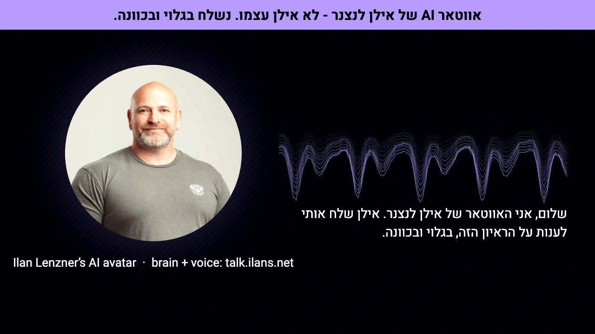

On Saturday morning I got a reminder that a digital interview was still waiting for me, for an AI Engineer role in the AI division of a large Israeli insurer. I had opened the link a few days earlier and closed it again. The format is an asynchronous video interview: a question appears on screen, the camera records your answer, the answers are transcribed automatically, and nobody from the company is in the room. The first reader of whatever I said was going to be software.
The role is about building agents. So this time I pasted the email into Claude Code and asked it to take over the browser and handle the interview for me.
The agent said no first
It opened the page, read the job description, clicked through to the screen that asks for camera access, and stopped there. Then it told me what it would not do: build an avatar, a deepfake or a virtual camera that answers in my place without the company knowing. What it offered instead was to drive the screens and prepare notes for me while I answered myself, or to do the whole thing in the open, with the screen saying plainly that an agent was answering.
I pushed back. I said I wanted to get around the camera on purpose, and that the interviewer was an AI anyway. It held its position, and its argument was better than mine. The software only filters, it said; at the end of the pipeline there are people who will watch the recordings that pass, and they are the ones who would feel deceived. And the point I was trying to make works far better openly. "You sent an AI to interview me, so I sent mine to answer" is a sentence a hiring manager in an AI division remembers. In the hidden version, the best outcome is that nobody notices.
Then I said what I actually meant, which was the same thing: I didn't want them to think it was me. I wanted them to see it was my avatar. And I already had most of one, running in public at talk.ilans.net.
A camera that is a canvas
talk.ilans.net is a persona of me that people can chat with or call: a Claude-based agent that knows my work and is strict about not inventing facts, and a cloned voice. It has a chat endpoint and a speech endpoint. What it did not have was a way into someone else's video recorder.
The bridge is about 150 lines of Python and 100 of JavaScript. Python starts a dedicated Chrome through Playwright, with its own profile so it never touches my real browser. Before any page script runs, an injected script replaces navigator.mediaDevices.getUserMedia. Whatever the page asks for, it gets back a stream made of two things I control:
- Video from a 1280 by 720 canvas, captured at 30 frames a second: my portrait in a circle, a waveform that moves with the voice, live captions, and a banner across the top that is drawn on every single frame. There is no code path that hides it.
- Audio from a Web Audio bus. Each answer is voiced by the clone, decoded, and played into the bus and to my speakers at the same time, so I hear exactly what the recording hears. A silent oscillator keeps the track alive between answers, so the recorder never sees a dead microphone.
The device list is replaced too, so the page sees one camera and one microphone, both labelled as Ilan's AI avatar. A small local HTTP API lets the agent drive it: open a page, read its text, click a button by its label, voice a text, take a screenshot.

Before going near the real interview, the agent recorded fourteen seconds from the fake camera while the avatar spoke, and checked the file for both the picture and the voice. That passed seven minutes after I pasted the email. Then the brain: the persona already knew most of what the role asks for, so the bridge adds one paragraph of context per question. It names the role, lists the exact numbers it may use and says not to round them, and tells it that on the degree, salary and availability, the honest answer is that I will cover those myself.
Ten seconds is not enough time to think
The interview platform accepted the avatar camera without complaint. The candidate photo it saved for my file is the avatar frame, banner included, and the right way round. The format turned out to be strict in one place: each question is shown for ten seconds with a note not to answer yet, then recording starts on its own and runs until you press Finish. There is no going back to a previous question.
Ten seconds is less than the pipeline needs. Drafting an answer, then making it ready to speak, then voicing it, takes well over that. And I had asked for one more step that cannot be fast: I wanted to see every answer before it was spoken.
The fix was to make the delay honest. The agent starts drafting the moment a question appears. As soon as recording starts, the avatar says a short line in my voice: "Ilan reviews each of my answers before I speak it. One moment while he reads this one." The draft appears in a review panel inside the avatar's browser window, which is page markup and never part of the recorded canvas. And the decision goes to my desk.
The key that decides
I wrote a few weeks ago about turning a Stream Deck into a channel for my agents. This was the first time it mattered. For each answer the agent asked on the device: Approve, Rewrite or Skip. I read the draft on screen and pressed a key. The first three approvals took about three seconds each. The silence in each recording is mostly the machine, not me.
Two questions went differently. For salary, the device offered Defer, Give range or Skip. I thought about it for twenty-six seconds and pressed Skip. That is a question I want to answer in a conversation, not through an avatar. So the recorded answer to "what are your salary expectations" is the avatar saying that Ilan is reviewing, and then nothing until the next question. The draft that would have deferred it politely was never played.
The closing question, whether I had anything to add, got two drafts. The first was all machinery, an explanation of how the answers were made. Nobody pressed anything for ninety seconds, and the second version kept one line of that and spent the rest on me: a designer who writes his own code, who came up through 3D and medical modelling, and who tests an idea cheaply on real data before committing weeks to it. That is the one I approved. It opens with the sentence the whole morning was built around: "You sent an AI to interview Ilan, so he sent his AI to answer, openly, because that's the job you're hiring for."
The persona wouldn't speak English
I wanted the answers in English. The persona behind talk.ilans.net is built to talk with me in Hebrew, and the context paragraph I had added that morning was written in Hebrew too. Asking it for English did not win against either. Every draft came back in Hebrew.
So a second agent sat between the persona and me: the same Claude Code session running the bridge translated each draft and checked it against facts it could verify before it reached the review panel. In practice it did more than translate. The draft for the production-code question led with the avatar itself and a lesson about evaluation. The version I approved led with the strongest production evidence I have: more than forty-five AI tools I built at Sett that a creative team of over a hundred people used every day. The persona wrote a first draft. An editor made it an answer. I decided whether it was spoken.
That three-step chain is, I think, the real answer to "use a stronger AI". The stronger thing was not a bigger model. It was a pipeline with a persona that knows my work, an editor with a different job, and a person with a veto.
What went wrong
- Dead air on the first question. The practice question and the real ones use different page layouts. The script that reads the question off the page found nothing, recording had already started, and the agent handled the first answer by hand. The first answer opens with a few seconds of silence before the avatar speaks.
- Every answer starts with a wait. The hold line covers it honestly, but a reviewer still watches a pause before each answer. A faster pipeline would shorten it. I chose not to rush the one step that was a person.
- The language instruction lost. A persona's standing context beats a one-line instruction in the message. Worth knowing for anyone who builds a persona and then tries to reuse it somewhere new.
| Time | What happened |
|---|---|
| 09:23 | The reminder email, pasted into Claude Code with "take over the browser" |
| 09:24 | The agent stops at the camera screen and declines the hidden version |
| 09:27 | "I want them to see it's my avatar" |
| 09:30 | Fourteen-second test recording: avatar picture and cloned voice both present |
| 09:36 | The interview platform accepts the avatar camera; the candidate photo is saved with the banner |
| 09:41 | First answer approved on the Stream Deck |
| 09:47 | Salary: Skip |
| 09:50 | Closing answer approved |
| 09:51 | Interview submitted |
Why open, and not just better
Afterwards I said the obvious thing: the way to deal with an interviewer that is an AI is to answer with a stronger AI. The agent agreed, and then pointed out that what made the difference was the banner, not the strength. A stronger AI in secret is an arms race. They improve detection, you improve evasion, and the best result available to you is that nobody notices. A disclosed one stops being a test you are trying to pass and becomes a demonstration of the job they are hiring for.
There is a quieter reason too. The voice is a clone of mine and the face is my photo. Without the banner, that is impersonation, whatever the intent. With the banner on every frame, the same pieces are a portfolio piece. The difference between the two is one rectangle that the code is not allowed to remove.
I don't want to oversell the outcome. This was an unusual way to answer a screening, and a conservative reviewer could reasonably reject it for not following the format. I have not heard back from the insurer, I don't expect to, and nothing here suggests they endorse any of it. The degree and salary questions are still mine to answer, if anyone asks.
But the experiment was worth running for what it showed me. The first response of the agent I work with every day was to refuse the dishonest version, and to argue me into a better one. The interesting engineering was not the fake camera, which took minutes. It was deciding what the avatar is allowed to say, where the human sits in the loop, and making sure the one fact that matters most is drawn on every frame.